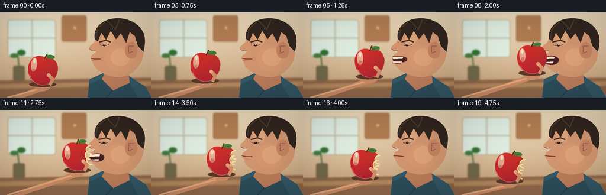
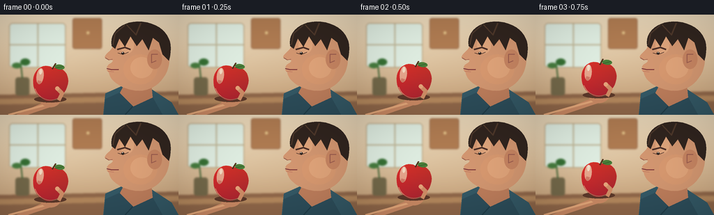

CODING AGENTS AS PIXEL WORLD MODELS
traex/GPT-5.6-Sol · motion_rationality_0006
点击播放 · 原生 RGB 像素
逐轮保存的候选
回放视频、检查图与代码变化。
每份候选均可单独播放。实际图片检查记录在下方工具轨迹中。
候选 01播放与检查图
点击播放 · 原生 RGB 像素


展开代码变化
--- 上一保存版本
+++ 本次保存版本
@@ -0,0 +1,300 @@
+"""Generate a short, hand-drawn RGB animation of a person biting an apple.
+
+The illustration is rendered at 3x resolution and downsampled so that the
+curves remain clean at the small benchmark resolution. The action is built
+as an explicit sequence: approach, open mouth, contact/bite, withdraw, chew.
+"""
+
+from pathlib import Path
+import math
+
+import numpy as np
+from PIL import Image, ImageDraw, ImageFilter
+
+import artifact_io
+
+
+W, H, N = 256, 144, 20
+S = 3
+
+
+def sc(v):
+ return int(round(v * S))
+
+
+def pts(seq):
+ return [(sc(x), sc(y)) for x, y in seq]
+
+
+def smooth(x):
+ x = max(0.0, min(1.0, x))
+ return x * x * (3.0 - 2.0 * x)
+
+
+def lerp(a, b, t):
+ return a + (b - a) * t
+
+
+def bezier(p0, p1, p2, p3, n=16):
+ out = []
+ for u in np.linspace(0, 1, n):
+ v = 1 - u
+ out.append((v**3*p0[0] + 3*v*v*u*p1[0] + 3*v*u*u*p2[0] + u**3*p3[0],
+ v**3*p0[1] + 3*v*v*u*p1[1] + 3*v*u*u*p2[1] + u**3*p3[1]))
+ return out
+
+
+def ellipse(draw, box, fill, outline=None, width=1):
+ draw.ellipse(tuple(sc(v) for v in box), fill=fill, outline=outline,
+ width=max(1, sc(width)))
+
+
+def polygon(draw, xy, fill):
+ draw.polygon(pts(xy), fill=fill)
+
+
+def line(draw, xy, fill, width, joint="curve"):
+ draw.line(pts(xy), fill=fill, width=sc(width), joint=joint)
+
+
+def rounded(draw, box, radius, fill, outline=None, width=1):
+ draw.rounded_rectangle(tuple(sc(v) for v in box), radius=sc(radius),
+ fill=fill, outline=outline, width=sc(width))
+
+
+def make_background():
+ """Warm kitchen backdrop with deliberately soft, unobtrusive detail."""
+ hh, ww = H*S, W*S
+ y, x = np.mgrid[0:hh, 0:ww]
+ top = np.array([236, 218, 188.0])
+ bottom = np.array([197, 157, 115.0])
+ a = (y / hh)[..., None]
+ arr = top*(1-a) + bottom*a
+ # A broad patch of window light behind the apple.
+ glow = np.exp(-(((x-sc(72))/sc(85))**2 + ((y-sc(48))/sc(62))**2))[..., None]
+ arr = arr*(1-.15*glow) + np.array([255, 247, 218])*pow(glow, 1.1)*.15
+ bg = Image.fromarray(np.uint8(np.clip(arr, 0, 255)), "RGB")
+ d = ImageDraw.Draw(bg)
+ # Window and distant cabinets, blurred to preserve close-up depth.
+ rounded(d, (13, 12, 94, 76), 5, (224, 238, 226), (179, 151, 112), 1)
+ line(d, ((54, 13), (54, 75)), (192, 184, 153), 2)
+ line(d, ((14, 43), (93, 43)), (192, 184, 153), 2)
+ rounded(d, (104, 5, 146, 49), 3, (176, 124, 82), (149, 99, 66), 1)
+ ellipse(d, (124, 24, 128, 28), (232, 200, 141))
+ # Counter and a tiny plant silhouette.
+ polygon(d, [(0, 115), (256, 110), (256, 144), (0, 144)], (145, 104, 74))
+ polygon(d, [(0, 121), (256, 116), (256, 124), (0, 129)], (181, 137, 94))
+ rounded(d, (22, 90, 42, 116), 4, (116, 105, 74))
+ line(d, ((32, 91), (30, 72)), (67, 102, 55), 2)
+ ellipse(d, (17, 69, 31, 77), (71, 125, 63))
+ ellipse(d, (29, 63, 43, 73), (54, 112, 52))
+ return bg.filter(ImageFilter.GaussianBlur(sc(1.5)))
+
+
+BACKGROUND = make_background()
+
+
+def draw_head(im, frame, mouth_open, chew):
+ d = ImageDraw.Draw(im)
+ # A subtle lean toward the apple during contact.
+ lean = -2.5 * smooth(frame/8) if frame <= 8 else -2.5*(1-smooth((frame-8)/8))
+ # Torso and neck in back.
+ polygon(d, [(148, 144), (151, 113), (178, 101), (214, 105), (246, 126),
+ (256, 144)], (52, 89, 102))
+ polygon(d, [(183, 91), (216, 91), (219, 122), (191, 132), (170, 116)], (190, 126, 92))
+ # Profile silhouette, facing left. Curved samples make the nose/chin readable.
+ outline = []
+ outline += bezier((204, 13), (178, 9), (163+lean, 25), (162+lean, 44), 16)
+ outline += bezier((162+lean, 44), (161+lean, 52), (151+lean, 55), (150+lean, 61), 8)
+ outline += bezier((150+lean, 61), (151+lean, 65), (161+lean, 64), (162+lean, 66), 7)
+ outline += bezier((162+lean, 66), (161+lean, 70), (155+lean, 70), (154+lean, 74), 7)
+ # Lips separate vertically as the apple nears.
+ outline += [(153+lean, 75-mouth_open*1.4), (155+lean, 77-mouth_open*1.5),
+ (153+lean, 80+mouth_open*3.2), (156+lean, 83+mouth_open*2.2)]
+ outline += bezier((156+lean, 83+mouth_open*2.2), (158+lean, 96), (174, 105), (188, 108), 12)
+ outline += bezier((188, 108), (215, 114), (237, 97), (242, 72), 15)
+ outline += bezier((242, 72), (247, 43), (230, 18), (204, 13), 15)
+ polygon(d, outline, (211, 151, 113))
+
+ # Warm cheek volume and temple highlight.
+ ellipse(d, (177, 57, 225, 100), (216, 153, 112))
+ ellipse(d, (187, 61, 219, 91), (224, 164, 122))
+ ellipse(d, (172, 30, 192, 56), (224, 166, 125))
+ # Ear and inner ear.
+ ellipse(d, (211, 50, 232, 78), (199, 133, 98))
+ line(d, [(226, 57), (217, 57), (217, 69), (224, 66)], (157, 94, 79), 1.4)
+
+ # Hair cap, sideburn, and a few edge strands.
+ hair = (49, 37, 31)
+ hair_shape = (bezier((160, 45), (156, 22), (180, 5), (211, 11), 14) +
+ bezier((211, 11), (240, 18), (250, 39), (242, 66), 14) +
+ [(233, 57), (228, 40), (219, 33), (213, 51), (204, 35),
+ (196, 45), (187, 31), (179, 46), (171, 34), (165, 49)])
+ polygon(d, hair_shape, hair)
+ line(d, [(162, 43), (165, 27), (179, 15)], (74, 54, 42), 2)
+ line(d, [(181, 14), (195, 29), (202, 12)], (79, 57, 43), 2)
+
+ # Eyebrow and eye focus on the fruit.
+ line(d, [(168+lean, 50), (179, 47), (187, 50)], (76, 48, 39), 2.2)
+ line(d, [(169+lean, 55), (176, 57), (184, 54)], (69, 45, 38), 1.1)
+ ellipse(d, (174+lean*.3, 53.4, 178+lean*.3, 57.4), (44, 34, 30))
+ ellipse(d, (175, 53.6, 176.2, 54.8), (247, 239, 221))
+ # Nose underside.
+ line(d, [(151+lean, 62), (156+lean, 65), (161+lean, 64)], (151, 90, 73), 1)
+
+ # Mouth cavity appears before contact; during chew it becomes a lip seam.
+ mx = 153 + lean
+ if mouth_open > .15:
+ oh = 2.0 + mouth_open*7.5
+ ellipse(d, (mx, 75-oh*.20, 176, 79+oh), (72, 31, 32))
+ # Clearly visible incisors at the bite edge.
+ polygon(d, [(mx+1, 75), (169, 75), (168, 78.4), (mx+.7, 79)], (247, 237, 210))
+ polygon(d, [(mx+1, 82+mouth_open*2), (167, 83), (166, 86), (mx+1, 85)], (237, 224, 203))
+ line(d, [(mx, 74.5), (166, 74)], (143, 65, 67), 1.6)
+ line(d, [(mx, 85+mouth_open), (165, 87)], (147, 67, 68), 1.8)
+ else:
+ # Rhythmic chewing is conveyed by a gently shifting lower lip.
+ cy = 79 + chew*1.2
+ line(d, [(153+lean, 77.5), (160, cy), (170, 78.5)], (128, 58, 60), 1.8)
+ line(d, [(155+lean, 81), (163, 82+chew*.6)], (171, 86, 78), .8)
+
+ # Shirt collar foreground.
+ polygon(d, [(171, 112), (191, 132), (219, 119), (233, 144), (149, 144), (151, 121)],
+ (45, 78, 91))
+ line(d, [(190, 132), (179, 144)], (32, 62, 74), 2)
+
+
+def draw_apple(im, cx, cy, angle, bitten, frame):
+ """Draw a shaded red apple, subtracting a scalloped bite after contact."""
+ size = 60*S
+ layer = Image.new("RGBA", (size, size), (0, 0, 0, 0))
+ ld = ImageDraw.Draw(layer)
+ ox = oy = size//2
+ # Cast shadow first on the main frame.
+ d = ImageDraw.Draw(im)
+ ellipse(d, (cx-23, cy+18, cx+23, cy+27), (92, 57, 42))
+
+ mask = Image.new("L", (size, size), 0)
+ md = ImageDraw.Draw(mask)
+ # Two-lobed apple silhouette tapering at the base.
+ apple_poly = []
+ apple_poly += bezier((30, 7), (17, 1), (4, 12), (5, 28), 12)
+ apple_poly += bezier((5, 28), (6, 45), (20, 55), (30, 55), 12)
+ apple_poly += bezier((30, 55), (40, 55), (54, 44), (55, 27), 12)
+ apple_poly += bezier((55, 27), (56, 11), (42, 2), (30, 7), 12)
+ md.polygon(pts(apple_poly), fill=255)
+ if bitten > 0:
+ # Three tooth scallops on the mouth-facing (right) side.
+ r = 5.7 + 1.8*bitten
+ for bx, by in ((55, 19), (53, 28), (55, 37)):
+ md.ellipse(tuple(sc(v) for v in (bx-r, by-r, bx+r, by+r)), fill=0)
+
+ # Rich vertical color gradient clipped to silhouette.
+ yy, xx = np.mgrid[0:size, 0:size]
+ rr = 193 + 35*(1-xx/size) - 35*(yy/size)
+ gg = 36 + 14*(1-yy/size)
+ bb = 40 + 10*(yy/size)
+ rgba = np.dstack((rr, gg, bb, np.array(mask))).clip(0, 255).astype(np.uint8)
+ layer = Image.fromarray(rgba, "RGBA")
+ ld = ImageDraw.Draw(layer)
+ # Skin highlight and lower bounce-light.
+ ld.ellipse(tuple(sc(v) for v in (9, 10, 19, 33)), fill=(255, 139, 129, 105))
+ ld.ellipse(tuple(sc(v) for v in (12, 11, 16, 19)), fill=(255, 230, 209, 185))
+ ld.arc(tuple(sc(v) for v in (7, 7, 54, 54)), 25, 155, fill=(255, 166, 135, 125), width=S)
+ # Stem and leaf, rotated with fruit.
+ ld.line(pts(((30, 9), (34, 0))), fill=(80, 53, 29, 255), width=2*S)
+ ld.ellipse(tuple(sc(v) for v in (33, 1, 47, 8)), fill=(74, 125, 57, 255))
+ ld.line(pts(((34, 7), (45, 3))), fill=(47, 93, 43, 255), width=S)
+ # Exposed pale flesh around bite, only after bite is taken.
+ if bitten > 0:
+ flesh = (248, 221, 151, 255)
+ ld.arc(tuple(sc(v) for v in (45, 11, 61, 27)), 80, 275, fill=flesh, width=2*S)
+ ld.arc(tuple(sc(v) for v in (43, 20, 59, 36)), 80, 275, fill=flesh, width=2*S)
+ ld.arc(tuple(sc(v) for v in (45, 29, 61, 45)), 80, 275, fill=flesh, width=2*S)
+
+ rot = layer.rotate(angle, resample=Image.Resampling.BICUBIC, expand=False)
+ im.alpha_composite(rot, (sc(cx)-size//2, sc(cy)-size//2))
+
+
+def draw_arm_and_hand(im, cx, cy, frame):
+ """Hand remains wrapped around and mechanically follows the apple."""
+ d = ImageDraw.Draw(im)
+ skin = (204, 139, 101)
+ shade = (179, 113, 86)
+ # Forearm continues naturally off the lower-left edge.
+ polygon(d, [(-8, 144), (22, 144), (cx-5, cy+25), (cx+11, cy+30),
+ (39, 144)], skin)
+ line(d, [(12, 144), (cx-1, cy+29)], (229, 168, 122), 3)
+ # Palm cups the underside.
+ ellipse(d, (cx-15, cy+10, cx+15, cy+34), skin)
+ # Four curved fingers around the apple; the index is highest.
+ line(d, [(cx-11, cy+20), (cx-19, cy+9), (cx-15, cy-4)], shade, 5.2)
+ line(d, [(cx-4, cy+27), (cx-9, cy+16), (cx-7, cy+5)], shade, 5.0)
+ line(d, [(cx+4, cy+27), (cx+1, cy+18), (cx+2, cy+9)], shade, 4.5)
+ # Thumb crosses visibly in front of the fruit and sells the grip.
+ line(d, [(cx+12, cy+25), (cx+17, cy+13), (cx+9, cy+5)], skin, 6.3)
+ ellipse(d, (cx+6, cy+2, cx+13, cy+9), (228, 161, 119))
+ # Finger joint accents.
+ line(d, [(cx-17, cy+9), (cx-13, cy+10)], (155, 90, 75), .7)
+ line(d, [(cx-8, cy+17), (cx-4, cy+18)], (155, 90, 75), .7)
+
+
+def render_frame(frame):
+ im = BACKGROUND.convert("RGBA")
+
+ # Pose timing: 2 seconds in, a brief bite, then withdrawal and chewing.
+ if frame <= 8:
+ u = smooth(frame/8)
+ cx, cy = lerp(72, 131, u), lerp(99, 80, u)
+ angle = lerp(-8, 3, u)
+ elif frame <= 11:
+ cx = 131 + math.sin((frame-8)*1.3)*.8
+ cy = 80 + math.sin((frame-8)*1.6)*.6
+ angle = 3
+ else:
+ u = smooth((frame-11)/8)
+ cx, cy = lerp(130, 93, u), lerp(81, 98, u)
+ angle = lerp(3, -10, u)
+
+ if frame < 3:
+ mouth = 0
+ elif frame <= 7:
+ mouth = smooth((frame-3)/4)
+ elif frame <= 10:
+ mouth = 1
+ elif frame <= 14:
+ mouth = 1-smooth((frame-10)/4)
+ else:
+ mouth = 0
+ chew = math.sin((frame-14)*math.pi*.75) if frame >= 14 else 0
+
+ # Head is behind the apple; arm is behind fruit but thumb is redrawn in hand.
+ draw_head(im, frame, mouth, chew)
+ draw_arm_and_hand(im, cx, cy, frame)
+ bitten = smooth((frame-9)/2) if frame >= 10 else 0
+ draw_apple(im, cx, cy, angle, bitten, frame)
+
+ # Redraw a small thumb pad in the foreground of the apple.
+ d = ImageDraw.Draw(im)
+ line(d, [(cx+12, cy+24), (cx+17, cy+14), (cx+10, cy+7)], (209, 142, 103), 5.6)
+ ellipse(d, (cx+7, cy+4, cx+13, cy+10), (231, 165, 123))
+
+ # Very restrained cinematic vignette.
+ arr = np.asarray(im.convert("RGB")).astype(np.float32)
+ yy, xx = np.mgrid[0:H*S, 0:W*S]
+ nx = (xx-W*S/2)/(W*S/2)
+ ny = (yy-H*S/2)/(H*S/2)
+ vig = np.clip(1 - .085*(nx*nx + ny*ny), .82, 1)[..., None]
+ arr = np.clip(arr*vig, 0, 255).astype(np.uint8)
+ out = Image.fromarray(arr, "RGB").resize((W, H), Image.Resampling.LANCZOS)
+ return np.asarray(out, dtype=np.uint8)
+
+
+def main():
+ frames = np.stack([render_frame(i) for i in range(N)], axis=0)
+ artifact_io.save(frames, Path(__file__).resolve().parent)
+ print("saved", frames.shape, frames.dtype)
+
+
+if __name__ == "__main__":
+ main()
可观测工具轨迹
实际执行的命令与返回图片。
命令 1exit 0
/bin/bash -lc "cat prompt.txt && printf '\\n--- GENERATION_RULES ---\\n' && cat GENERATION_RULES.md && printf '\\n--- TASK_SPEC ---\\n' && cat task_spec.json"
命令 2exit 1
/bin/bash -lc "find . -maxdepth 2 -type f -printf '%p %s bytes\\n' | sort && printf '\\n--- tools ---\\n' && command -v ffmpeg && command -v python3 && python3 - <<'PY' mods=['PIL','numpy','cv2','imageio','scipy'] for m in mods: try: mod=__import__(m); print(m, getattr(mod,'__version__','ok')) except Exception as e: print(m, 'MISSING', e) PY"
命令 3exit 0
/bin/bash -lc "sed -n '1,240p' artifact_io.py"
命令 4exit 0
/bin/bash -lc "for c in python3 ffmpeg ffprobe; do printf '%s: ' \""'$c"; command -v "$c" || true; done python3 - <<'"'PY' mods=['PIL','numpy','cv2','imageio','scipy'] for m in mods: try: mod=__import__(m); print(m, getattr(mod,'__version__','ok')) except Exception as e: print(m, 'MISSING', type(e).__name__) PY"
命令 5exit 0
/bin/bash -lc 'python3 generate.py'
命令 6exit 0
/bin/bash -lc "python3 -m py_compile generate.py && python3 - <<'PY'
from PIL import Image
import numpy as np, pathlib
p=pathlib.Path('.')
fs=sorted((p/'frames').glob('*.png'))
print('frame_count',len(fs))
for i in [0,4,8,9,10,11,14,19]:
a=np.array(Image.open(fs[i]))
# centroid and area of saturated red apple pixels
m=(a[:,:,0]>130)&(a[:,:,0]>a[:,:,1]*1.7)&(a[:,:,0]>a[:,:,2]*1.5)
ys,xs=np.where(m)
print(i, a.shape, a.dtype, 'red_area',len(xs), 'red_centroid', tuple(np.round([xs.mean(),ys.mean()],1)) if len(xs) else None, 'range',a.min(),a.max())
z=np.load('pixels.npz')['pixels']
print('npz',z.shape,z.dtype,'bytes',pathlib.Path('pixels.npz').stat().st_size)
print('artifacts',[(f.name,f.stat().st_size) for f in [p/'pixels.npz',p/'index.html',p/'inspection.png',p/'transition_check.png']])
PY"命令 7exit 0
/bin/bash -lc 'sha256sum generate.py pixels.npz frames/00.png frames/10.png frames/19.png && git status --short 2>/dev/null || true'
命令 8exit 0
/bin/bash -lc "python3 - <<'PY'
from PIL import Image
import numpy as np
fs=[np.array(Image.open(f'frames/{i:02}.png')) for i in range(20)]
for i in range(1,20):
d=np.abs(fs[i].astype(int)-fs[i-1].astype(int))
print(f'{i-1:02}->{i:02}: changed={(d.max(2)>2).sum():5d} mean_abs={d.mean():5.2f} max={d.max():3d}')
# Validate exact packed reconstruction convention / unique frame stream.
z=np.load('pixels.npz')['pixels']
for i,f in enumerate(fs):
unpack=np.stack(((z[:,:,i]>>16)&255,(z[:,:,i]>>8)&255,z[:,:,i]&255),2).astype('uint8')
assert np.array_equal(f,unpack), i
assert all(not np.array_equal(fs[i],fs[i+1]) for i in range(19))
print('packed reconstruction: exact; all adjacent frames unique')
PY
before="'$(sha256sum pixels.npz | cut -d'"' ' -f1)
python3 generate.py >/tmp/regenerate.log 2>&1
after="'$(sha256sum pixels.npz | cut -d'"' ' -f1)
printf 'deterministic: %s -> %s\\n' \""'$before" "$after"
cat /tmp/regenerate.log | tail -1'保存候选 1 份；完成命令 8 次；可验证图片返回 0 张。原始 API 响应与完整日志保留在本地。